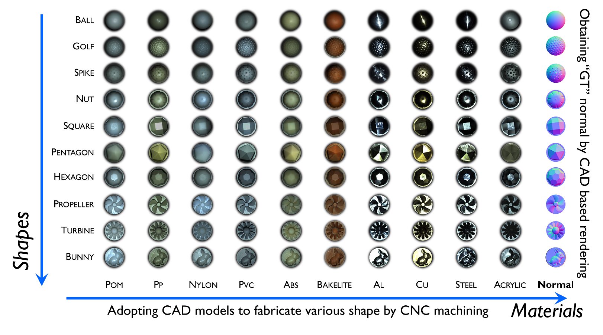
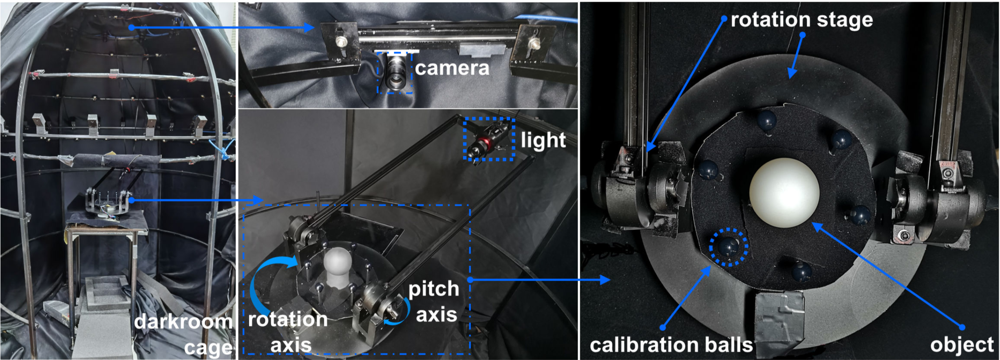
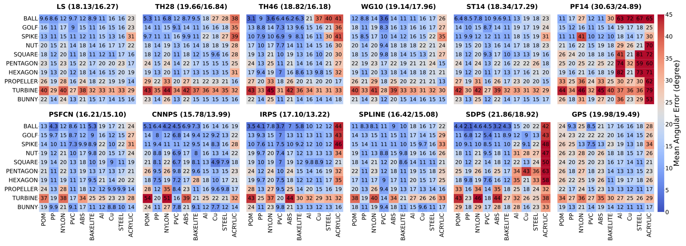

DiLiGent102: A Photometric Stereo Benchmark Dataset
with Controlled Shape and Material Variation
CVPR 2022 (Poster presentation)
- Jieji Ren 1
- Feishi Wang 2
- Jiahao Zhang 2
- Qian Zheng 3
- Mingjun Ren 1
- Boxin Shi 2,4,5
- 1School of Mechanical Engineering, Shanghai Jiao Tong University
- 2National Engineering Research Center of Visual Technology, School of Computer Science, Peking University
- 3College of Computer Science and Technology, Zhejiang University
- 4Institute for Artificial Intelligence, Peking University
- 5Beijing Academy of Artificial Intelligence
Overview
Evaluating photometric stereo using real-world dataset is important yet difficult. Existing datasets are insufficient due to their limited scale and random distributions in shape and material. This paper presents a new real-world photometric stereo dataset with "ground truth" normal maps, which is 10 times larger than the widely adopted one. More importantly, we propose to control the shape and material variations by fabricating objects from CAD models with carefully selected materials, covering typical aspects of reflectance properties that are distinctive for evaluating photometric stereo methods. By benchmarking recent photometric stereo methods using these 100 sets of images, with a special focus on recent learning based solutions, a 10×10 shape-material error distribution matrix is visualized to depict a "portrait" for each evaluated method. From such comprehensive analysis, open problems in this field are discussed.
Highlights
- The largest public PS dataset with 100 sets of images with "ground truth" normal;
- Shape and Material controlled variation from simpleness to complexness.
- Developing a omnidirectional and single illumination system for image capture.
- Benchmarking and comparing classic and learning based PS methods systematically.
Date Capture Setup
Lighting and imaging setup for building the DiLiGenT102 dataset. A cage is built and covered with black-out cloth to act as a darkroom. Camera is mounted on the zenith of the cage. An LED light source is mounted on a two-axes stage, and the target object is placed at the rotation center. Six specular balls are placed around the target object to calculate the lighting direction.
Benchmark Results
A 10*10 shape-material error distribution matrix is visualized to depict a "portrait" for each evaluated method.
Citataion
@InProceedings{Ren_2022_CVPR, author = {Ren, Jieji and Wang, Feishi and Zhang, Jiahao and Zheng, Qian and Ren, Mingjun and Shi, Boxin}, title = {DiLiGenT10{$^2$}: A Photometric Stereo Benchmark Dataset with Controlled Shape and Material Variation}, booktitle = {Proceedings of the IEEE/CVF Conference on Computer Vision and Pattern Recognition (CVPR)}, month = {June}, year = {2022}, pages = {12581-12590} }
Contact
Any questions and further discussion, please send e-mail to jiejiren_AT_sjtu_DOT_edu_DOT_cn.